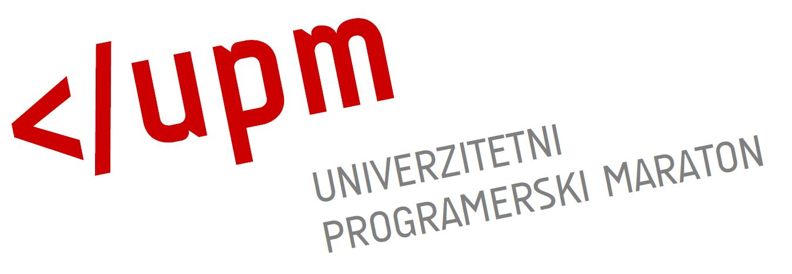
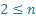
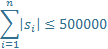

Licenca
To delo je na voljo pod pogoji slovenske licence Creative Commons 2.5:
priznanje avtorstva - nekomercialno - deljenje pod enakimi pogoji.
Celotna licenca je na voljo na spletu na naslovu http://creativecommons.org/licenses/by-nc-sa/2.5/si/. V skladu s to licenco je dovoljeno vsakemu uporabniku delo razmnoževati, distribuirati, javno priobčevati, dajati v najem in tudi predelovati, vendar samo v nekomercialne namene in ob pogoju, da navede avtorja oziroma avtorje in izdajatelja tega dela. Če uporabnik delo predela, kar pomeni, da ga spremeni, preoblikuje, prevede ali uporabi to delo v svojem delu, lahko predelavo dela ponudi na voljo le pod pogoji, ki so enaki pogojem iz te licence oziroma pod enako licenco.

- ACM Univerzitetni programerski maraton je vseslovensko tekmovanje za študente v znanju programiranja, s poudarkom na poznavanju podatkovnih struktur in algoritmov. Najboljše ekipe študentov se uvrstijo na srednjeevropsko tekmovanje CERC (Central Europe Regional Contest), najuspešnejše ekipe pa še dalje na mednarodno tekmovanje ICPC (International Collegiate Programming Contest).

Konference
Poleg tekmovanj seveda ne smemo zanemariti strokovnih konferenc in revij s področja računalništva in informatike. Te pomembno pripomorejo k promociji računalništva in informatike ter skrbijo za raziskovalno komponento te mlade znanosti.
Primer naloge (Avtor: Tomaž Hočevar, 3. kolo UPM 2014)
Biologi so našli več živalskih vrst, ki imajo zanimivo lastnost – v temi se svetijo! Upajo, da bodo z odkritjem odgovornega gena za vedno rešili problem skrivanja hišnih ljubljenčkov (npr. hrčkov pod posteljo). Določili so genske zapise vseh živali, sedaj pa jih zanima, kateri deli zapisa oz. geni so skupni vsem živalim in so zato kandidati za nadaljnje raziskovanje.
Genske zapise n živali bomo predstavili z nizi s1 do sn. Napišite program, ki bo preštel vse nize g, za katere velja, da se kot podnizi pojavijo v prav vseh nizih si.
Vhodni podatki
V prvi vrstici se nahaja število nizov n. Sledi n vrstic, pri čemer je v i-ti vrstici podan niz si. Vsi nizi so sestavljeni iz malih črk angleške abecede.
Omejitve vhodnih podatkov
|  |  |
Izhodni podatki
Izpišite eno vrstico, ki naj vsebuje število skupnih podnizov.
| Primer 1 | Primer 2 | ||
|---|---|---|---|
| Vhod: | 3 abaxa bbab sabbac |
Vhod: | 2 acgt xyz |
| Izhod: | 4 | Izhod: | 0 |
Komentar
V prvem primeru so skupni podnizi a, ab, b in ba.